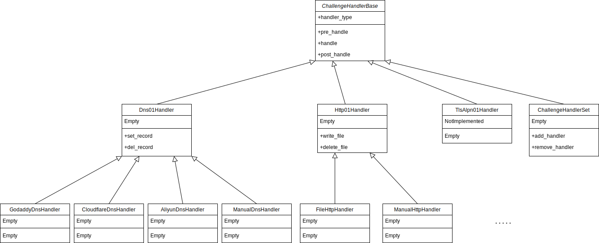

Challenge Handling¶
ChallengeHandlers的结构如下：

ChanllengeHandlerBase是所有Handler的基类，定义了pre_handle、handle、post_handle三个抽象方法。pre_handle保留备用。handle()
用于设置网络资源以满足ACME服务器的"挑战"要求，post_handle用于完成认证后解除这些网络资源。
ChallengeHandlerBase¶
get_handler_type 抽象方法¶
获取此Handler可为指定的标识符处理何种类型的"挑战"，与RFC8555 section-9.7.8 对应，通常是http-01、dns-01、tls-alpn-01。
def get_handler_type(identifier) -> str
identifier: ACME Authorization Object中的identifier。
返回可为此标识符处理何种挑战。
pre_handle 抽象方法¶
保留备用，所有子类应当实现此方法但不进行任何操作。
handle 抽象方法¶
handle方法用于设置"挑战"所需的网络资源。
def handle(url, identifier, token, key_thumbprint) -> bool
url：Challenge的URL，通常可唯一确定一个Challenge。
identifier：identifier的value。通常是等待认证的域名。
token：服务器为此Challenge指定的token，用来计算key authorization。见RFC8555 section-8.1 。
key_thumbprint：账户密钥的指纹，与token一起，用于计算key authorization。
handle方法返回True或False，指示"挑战"所需的网络资源是否被成功设置。
post_handle 抽象方法¶
post_handle方法用于撤销为满足挑战所设置的网络资源。
def post_handle(url, identifier, token, key_thumbprint, succeed) -> bool
succeed：之前的handle方法是否成功。
其余参数与handle相同。
post_handle方法应返回True或False，指示资源是否被成功撤销。
HandlerSet¶
ChallengeHandler集合，可为不同的域名分别设置Handler。
s = HandlerSet(default_handler=None)
default_handler：通过域名寻找Handler时，若没有与指定域名对应的Handler，则返回default_handler，当default_handler时None时，查找不存在将引发KeyError。
default_handler属性¶
设置或获取default_handler。
添加、查找、删除Handler¶
HandlerSet实现了 __setitem__、__getitem__和__delitem__。可使用handler_set[domain] = handler的风格设置、查找和删除Handler。
Dns01Handler¶
用于处理dns-01挑战。
Dns01Handler是一个抽象基类，包含set_record和del_record两个抽象方法。handle方法会调用set_record方法，post_handle方法调用del_record方法。
handle方法将待处理的域名(id_value)分割成子域名和一级域名，并在子域名前加上_acme-challenge.前缀，计算满足挑战所需的TXT记录的值，传递给子类的set_record方法。post_handle方法进行同样的操作，并传递给子类的del_record方法。
考虑到有些DNS服务商使用唯一ID来标识一个DNS记录，大部分可通过此ID来删除对应的记录。Dns01Handler添加了record_id机制来简化此过程：
set_record方法可返回所设置的DNS记录的ID，此返回值会原样传递给del_record方法的record_id参数。
若set_record方法的返回值的真值判断为真，即bool(set_record(...)) == True，则此操作被认为是成功的，handle方法将返回True。同时在一个字典中建立从挑战url到此返回值的映射关系。post_handle方法被调用时，从此字典中弹出(pop)此返回值，作为record_id参数传递给del_record方法。若字典中不存在与之对应的返回值，record_id将传入None。
txt_value 静态方法¶
计算TXT记录的值。{token}.{key_thumbprint}计算sha256哈希值，再用base64_url编码，去掉末尾填充的等号=。
check_txt_record 方法¶
向DNS服务器查询指定域名的TXT记录，并检查DNS服务器返回的结果与预期值是否相符。目前此方法使用['8.8.8.8', '1.1.1.1', '9.9.9.9']作为DNS服务器。
def check_txt_record(self, domain: str, value: str) -> bool
domain：要检查TXT记录的的域名。
value：预期的TXT记录值。
check_txt_record方法返回DNS服务器记录的TXT值与预期值是否相符。
set_record 抽象方法¶
设置DNS TXT记录。
def set_record(subdomain, fld, value)
subdomain：需要设置记录的子域名，已附加_acme-challenge.前缀。
fld：需要设置记录的一级域名。
value：需要设置的TXT记录值。
例如，需要认证的域名是abc.def.example.co.uk，则subdomain是abc.def，fld是example.co.uk。
当设置成功时，若DNS服务商提供记录ID，应返回记录ID，若不提供则返回True。当设置失败时应返回False。
del_record 抽象方法¶
删除DNS TXT记录
def del_record(subdomain, fld, value, record_id)
其余参数与set_record相同
record_id：set_record返回的记录ID，注意对一个挑战，此参数只会被传递一次。例如
handler.handle(url, 'examplr.org', token, thumbprint)
handler.post_handle(url, 'examplr.org', token, thumbprint, True)
handler.post_handle(url, 'examplr.org', token, thumbprint, True)
则第二次调用post_handle进而调用del_record时，此次调用的record_id参数将为None。
删除成功返回True，失败返回False。
CloudflareDnsHandler¶
处理托管在Cloudflare上的域名的dns-01挑战。
c = CloudflareDnsHandler(api_token)
api_token：Cloudflare API-Token，我们已删除对API-Key的支持。
API-Token需要Zone.Zone.Read和Zone.DNS.Edit权限。前者用于通过域名获取Zone ID，后者用于编辑DNS记录。
注意： 若在调用del_record时提供了record_id，则del_record方法将直接删除此ID对应的记录，不检查value是否与DNS记录值相同。
GodaddyDnsHandler¶
处理托管在Godaddy上的域名的dns-01挑战。
g = GodaddyDnsHandler(api_key, api_secret)
api_key：API key中的"key"字段。
api_secret：API key中的"secret"字段
AliyunDnsHandler¶
处理托管在Aliyun上的域名的dns-01挑战。
g = AliyunDnsHandler(access_key_id, access_key_secret)
access_key_id：Aliyun提供的AccessKey ID。
access_key_secret：Aliyun提供的AccessKey Secret。
DnspodDnsHandler¶
处理托管在腾讯云Dnspod上的域名的dns-01挑战。
g = DnspodDnsHandler(secret_id, secret_key)
secret_id: 腾讯云提供的SecretId
secret_key: 腾讯云提供的SecretKey
ManualDnsHandler¶
用于手动添加和删除DNS记录。
注意： 此方法包含交互式操作，无法用于自动化脚本。
此方法会显示需要设置的TXT记录，设置完成后按ENTER，程序会自动等待DNS记录扩散。挑战完成后，按提示删除记录即可。
Http01Handler¶
用于处理http-01挑战。
Http01Handler是一个抽象基类。包含set_resource和del_resource两个方法，分别用于设置和删除认证所需的HTTP资源。
set_resource¶
def set_resource(identifier, filename: str, content: bytes) -> bool
identifier：要进行认证的标识符。
filename：需要设置的文件名。
content：需要设置的文件内容
根据RFC8555，设置的文件路径始终为/.well-known/acme-challenge/
del_resource¶
def del_resource(identifier, filename: str, content: bytes) -> bool
identifier：要进行认证的标识符。
filename：需要设置的文件名。
content：需要设置的文件内容
在实现此方法时，可以校验文件内容。
ManualHttpHandler¶
用于手动处理http-01挑战。
注意： 此方法包含交互式操作，无法用于自动化脚本。
此方法会显示需要设置的文件名称、路径和内容，设置完成后按ENTER键。认证完成后按提示删除文件即可。
FileHttpHandler¶
在Web Server根目录中创建http-01挑战所需的文件，自动完成http-01挑战。
f = FileHttpHandler(base_dir)
base_dir：Web Server根目录。
TlsAlpn01Handler¶
注意： TlsAlpn01Handler仍处于开发阶段，继承结构和调用方式仍会更改。
用于处理tls-alpn-01挑战，TlsAlpn01Handler会创建一个TLS服务器，与ACME服务器执行TLS握手，并完成挑战。也可以通过create_acmetls1_cert方法创建用于完成挑战的TLS证书。
t = TlsAlpn01Handler(listen_addr, listen_port)
listen_addr：TLS服务器监听的地址，默认是'0.0.0.0'。
listen_port：TLS服务器监听的端口，默认是443。
create_acmetls1_cert¶
创建用于tls-alpn-01挑战的证书。
def create_acmetls1_cert(identifier, token, key_thumbprint) -> (bytes, bytes):
参数与ChallengeHandlerBase.handle方法相同。此方法返回(私钥, 证书)元组，PEM编码。